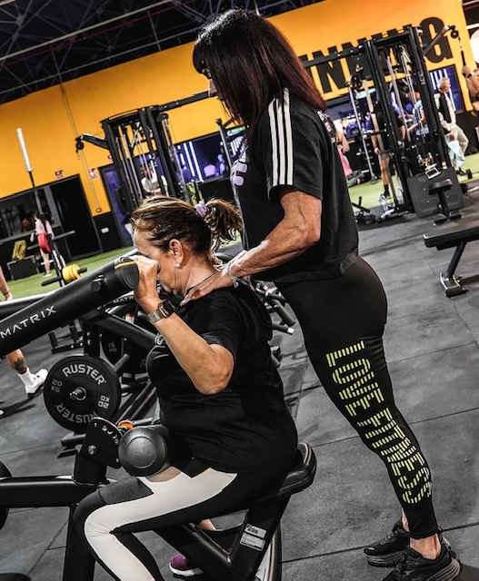
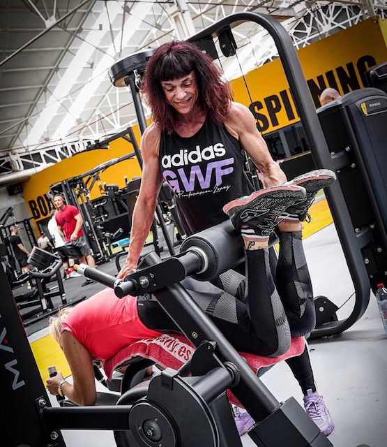
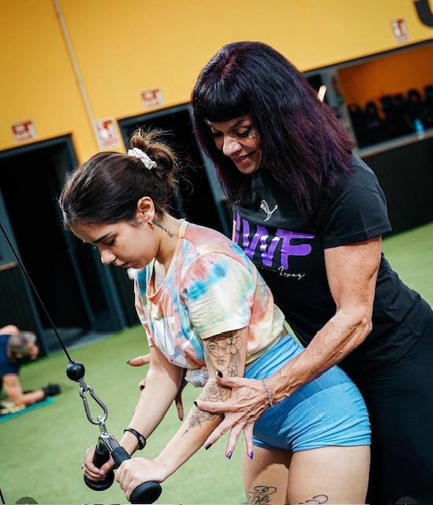

Diseñado para mujeres que buscan ganar firmeza, cuidar sus articulaciones y acelerar su metabolismo. Presencial en Puente Tocinos (Murcia) o a distancia desde donde estés. 100% guiado por Purificación López.
Hola, soy Purificación López
"Creé GoWomanFit para ofrecer a cada mujer, tenga 25 o 70 años, un espacio propio y seguro donde aprender a mover su cuerpo con confianza, sin miedos y libre de dolor. La fuerza no es una cuestión de estética, sino de salud, autonomía y calidad de vida."

Sesiones 100% individuales y adaptadas a tus objetivos, edad o patologías previas con Purificación López.
Atención semi-personalizada en grupos muy reducidos para cuidar tu postura y tonificar en un ambiente íntimo.
Planificación a medida para entrenar desde casa o combinar sesiones presenciales con pautas a distancia.
Un método sencillo en 3 pasos diseñado para adaptarse a tu ritmo de vida.
Analizamos tu estado físico, historial postural, patologías previas y objetivos de forma gratuita.
Diseñamos tu rutina de fuerza y Pilates totalmente personalizada a tu edad y punto de partida.
Guiamos cada movimiento en persona o por vídeo para garantizar progresos constantes sin riesgo.
Instalaciones reales, equipamiento de alta calidad y un ambiente guiado para que progreses con total seguridad.


Agenda tu valoración inicial gratuita. Analizaremos tu caso sin ningún compromiso.
Resolvemos todas tus dudas para que des el paso hacia tu entrenamiento con total confianza.
Escríbeme directamente por WhatsApp y resolveré tus preguntas sin ningún compromiso.
Consultar por WhatsApp